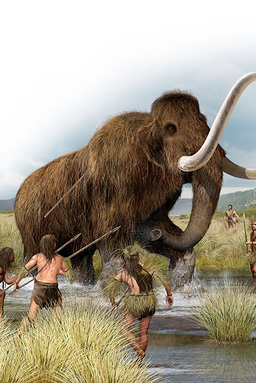
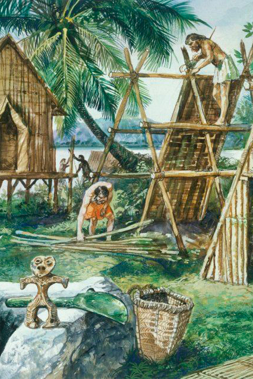
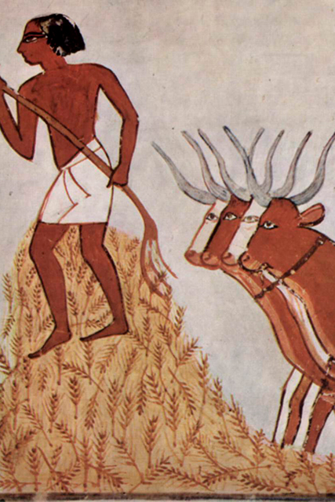
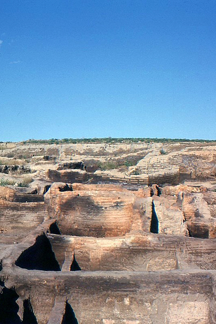
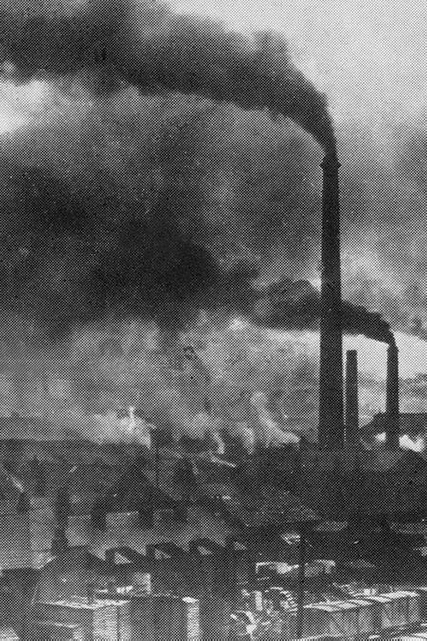
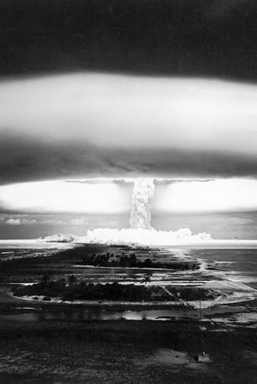

A pesar de que se han propuesto varias fechas de inicio para el Antropoceno,
distinguido como un nuevo período geológico ya sea posterior o dentro del Holoceno, su proceso de
ratificación aún está en curso, por lo que queda por definitir una fecha. A continuación una
cronología de los acontecimientos más importantes acerca del desarrollo de la actividad humana con
impactos en el medio ambiente, los cuáles son considerados como posibles inicios para el Antropoceno
por la comunidad científica.
Extinción de megafauna

La desaparición de grandes animales terrestres conocidos como megafauna al
final del último período
glacial fue la primera vez en que los humanos tuvieron un papel importante en los periodos de
extinciones debido a la caza excesiva. Fuera del continente africano, al no evolucionar junto con
los
humanos, demostró ser muy sensible a la introducción de nuevas depredaciones y muchas especies se
extinguieron poco después de la expansión humana.
Revolución neolítica

La Revolución Neolítica fue la transición a gran escala de muchas culturas
humanas durante el
período
Neolítico de un estilo de vida de caza y recolección a uno de agricultura y asentamiento, haciendo
posible una población cada vez mayor. Estas comunidades asentadas permitieron a los humanos observar
y
experimentar con plantas para aprender cómo crecían y se desarrollaban, lo cual condujo a la
domesticación de las plantas.
Domesticación del ganado

Los animales de presa fueron domesticados progresivamente al principio de la
historia de la
agricultura,
empezando por los cerdos en Mesopotamia alrededor del 13.000 a. C., seguido por las ovejas en el
11.000
y el ganado en Pakistán alrededor del 8.500 a. C., el cuál fue usado como animal de tiro. Desde
entonces, el ser humano ha tenido la necesidad de alimento y territorio no solo para sí mismo, sino
también para su ganado.
Primer protociudad

Çatalhöyük fue un asentamiento muy grande en el sur de Anatolia, que existió
en el neolítico y
calcolítico aproximadamente desde el 7100 a. C. hasta el 5700 a. C., floreciendo 100 años después de
su
fundación. Es considerado como el sitio neolítico más grande y mejor conservado encontrado hasta la
fecha así como la primer protociudad. Se ha estimado que la población del montículo oriental llegó a
albergar hasta a 10, 000 personas.
Revolución industrial

La Revolución Industrial fue la transición a nuevos procesos de fabricación
en Europa y Estados
Unidos
entre 1760 y 1840 gracias a la combustión a gran escala de carbón, petróleo y gas que permitió el
surgimiento del sistema de fábrica mecanizado para la producción de nuevos productos químicos,
conduciendo a un aumento sin precedentes en la tasa de crecimiento de la población, en el cuál esta
llego por primera vez a mil millones.
Era atómica

La era atómica se considera el comienzo del Antropoceno más aceptado, ya sea
la detonación de la
primera
bomba atómica en 1945 o el Tratado de Prohibición Parcial de Ensayos Nucleares en 1963, cuando la
lluvia
radioactiva alcanzó un pico en la atmósfera. El material radiactivo de esta y posteriores
detonaciones
han dejado un rastro inconfundible en la geología de la Tierra y marcó el comienzo de cambios
profundos
en el pensamiento sociopolítico y el curso del desarrollo tecnológico.
Gran aceleración
La evidencia científica prueba que los últimos 70 años han sido testigos de
la transformación más
profunda de la relación humana con el mundo natural en la historia de la humanidad, ya que muchas
actividades humanas alcanzaron puntos de despegue en algún momento del siglo XX que continuan
acelerándose bruscamente y cuyos efectos son claramente discernibles a nivel de Ciencia del sistema
Tierra y amenazan nuestra existencia.